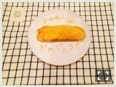

| 2016/04 05 Tue | ひめたん-0o0-その624 |

いくちゃんが我が家に遊びに来たー♡
ふたりでずっとごろごろしてました
いくちゃんオススメのアイスを
ふたりで食べました～
世の中で一番早く
私のお誕生日をお祝いしてくれました
みて下さいこれ！！
な......なんと......！
あのいくちゃんが！
連載の方で練習したんですってね
卵焼きを振舞ってくれたんです
お誕生日ケーキならぬお誕生日卵焼き
斬新過ぎるぅ(´;ω;`)嬉しい～
ふたりで美味しくいただきました
ありがとういくちゃん♡
キッチンに立って料理をするいくちゃんを
写真撮ってみたんだけれど
うちのキッチン公開するの恥ずかしいので
これは想い出フォルダにしまっておく。笑
お知らせがあります！雑誌！
4/27発売の「ラジオ番組表」に
取材していただきました
ひゃ～嬉しい♡
実は私、愛読しているんです！
愛読っていうか
たくさんのラジオ局のタイムテーブルが
ざざっと載っているんですが
それを眺めるのが好きで
言ってみればそれが私の数少ない
「普段おうちで何してますか？」の答えで。
そんな雑誌に今回自分が載れるなんて！！
夢でしょうか！ありがとうございます！
ラジオのことお話してきました！
乃木坂ちゃんのラジオ番組も
この春からまた増えたし
きっと楽しいと思います！
是非見てみて下さい～
日曜の夜はらじらー！サンデー
ゲストは声優アーツに茅原実里さん
乃木坂46から堀未央奈ちゃんでした～♪
21時台頭でタイトルコールできるの
めっちゃめちゃ嬉しいo(^o^)o
先週ななみんがアドバイスしてくれた
黒のメンズのパーカー
普通に気に入ってしまった。
流石ななみん......！
握手会でも着ようかな～
未央ちゃんは3回目にして
ひとりでは初登場でしたね。
新年度になって
出られるようになったメンバーが増えて
嬉しい( ˆωˆ )たくさんお迎えしたい！
高校生メンバーも
21時台私今までより長くいられるから
是非来て欲しいですね！
真夏、ななみん、そして
SKE48の野口由芽さん
おたよりありがとう～♡

グラビアザテレビジョン発売中！
最新刊にて久々のソログラビアを
撮っていただいてます。
インタビューもロングです。全部で9P！
お洋服は、普段のひめたんが着てそうな服
ってご指定があったみたいなんですが
その日撮影に着て行った私服が
まんまこんな感じでびっくりしました
これ私服？衣装？どっち？みたいな。
～お知らせ～
4/5 BOMBER-E(め～テレ)
4/6 トップエール
4/10 マーキー
4/12 BOMBER-E(め～テレ)
4/15 EX大衆
4/22 BRODY
4/23 UTB
4/27 ラジオ番組表
前髪・触角革命！！
わかる？
わかんないよね
でも全然違うんだよ！！革命！！
(＊´・ω・＊)
コメント(723)
2016/04/05 00:00